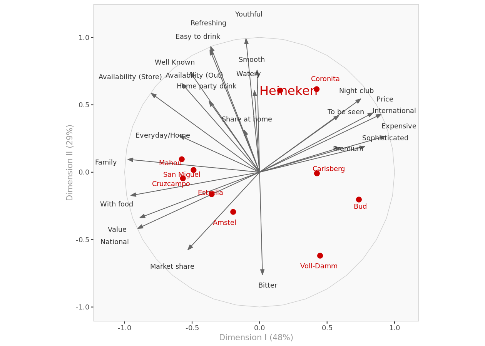
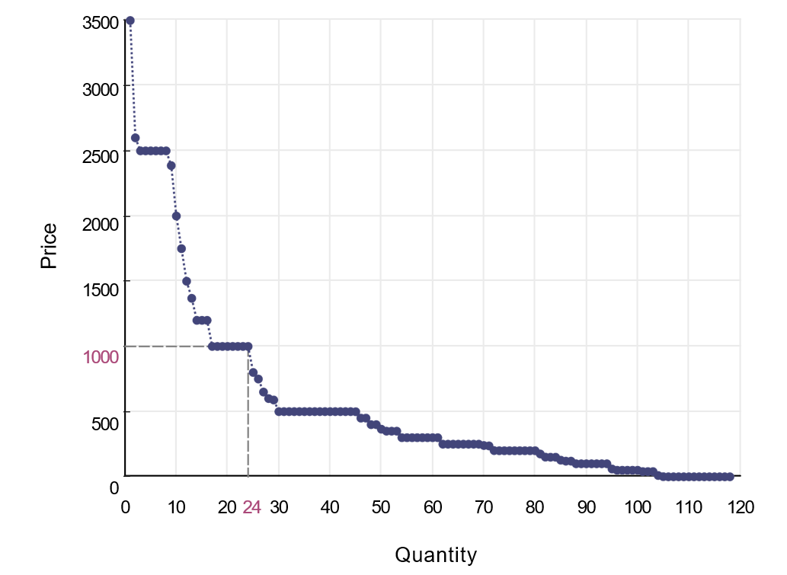
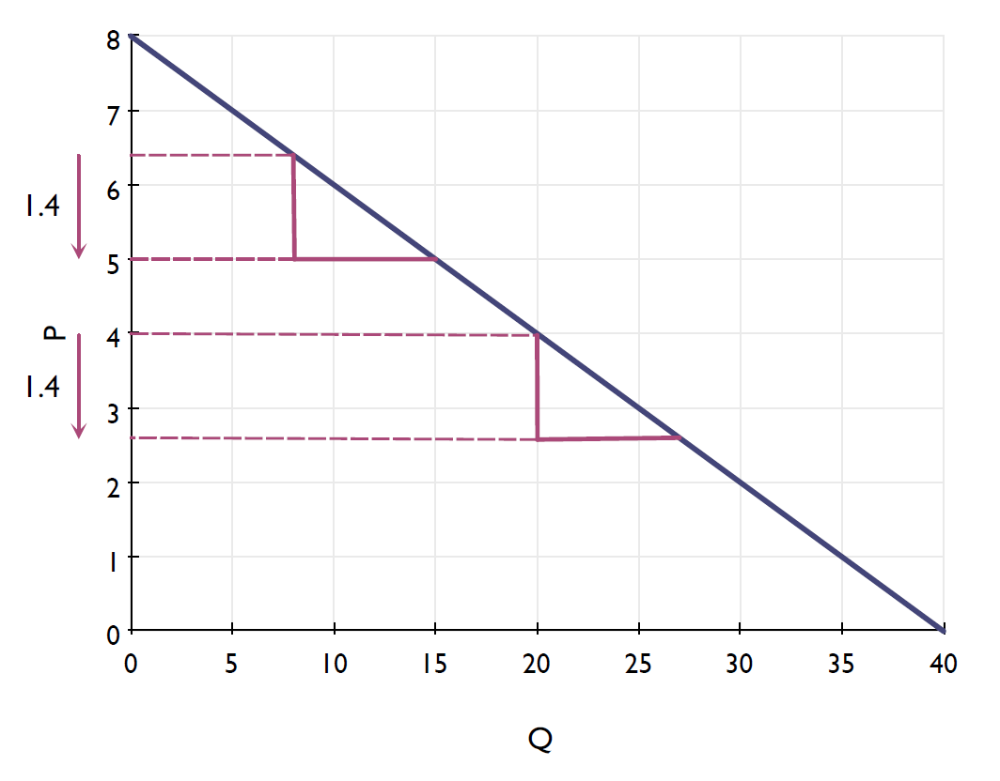
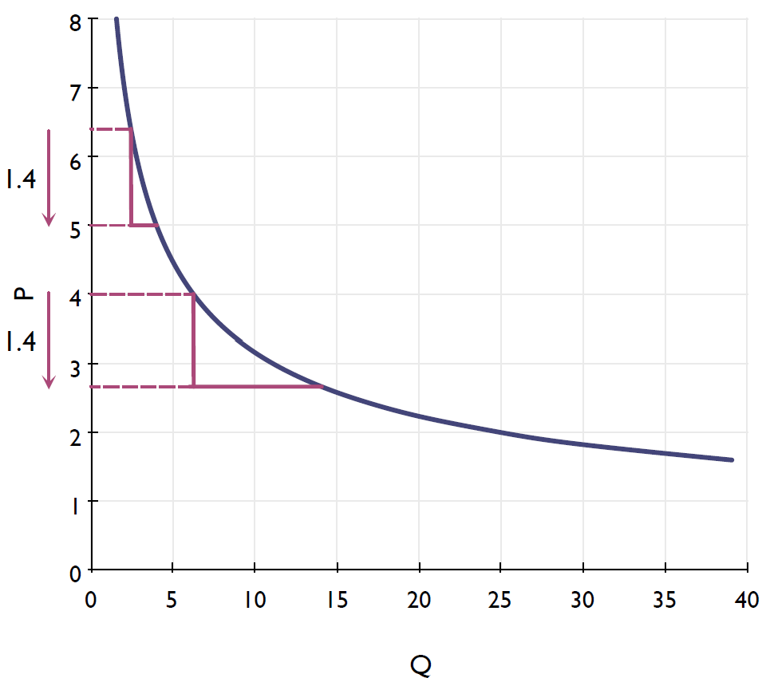
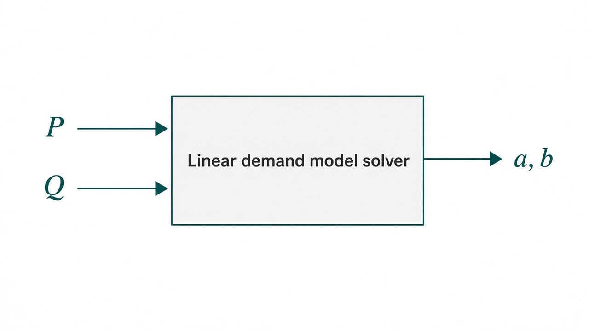
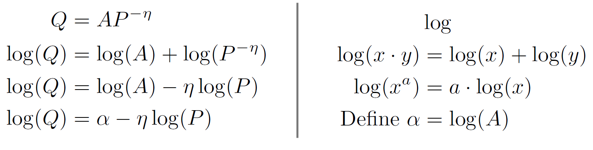
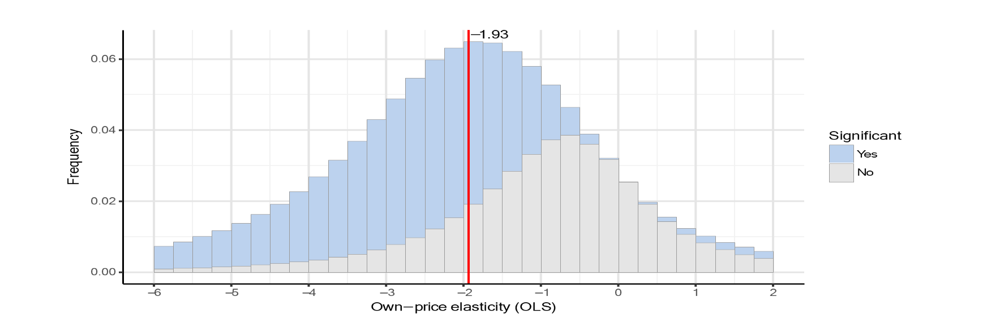
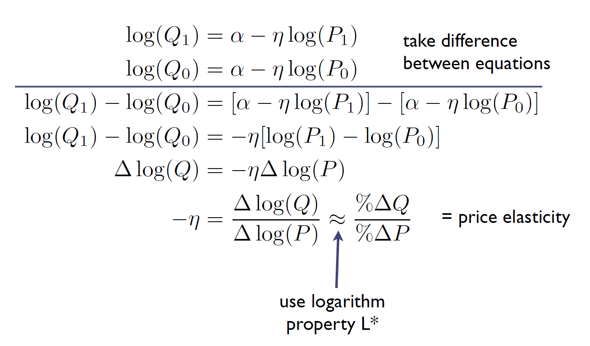
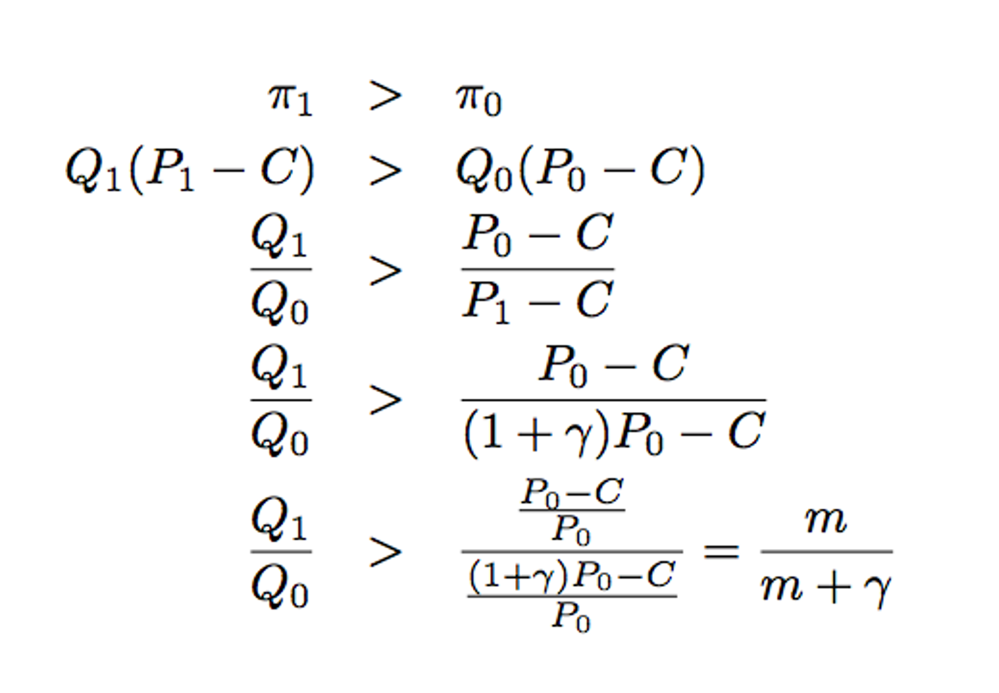
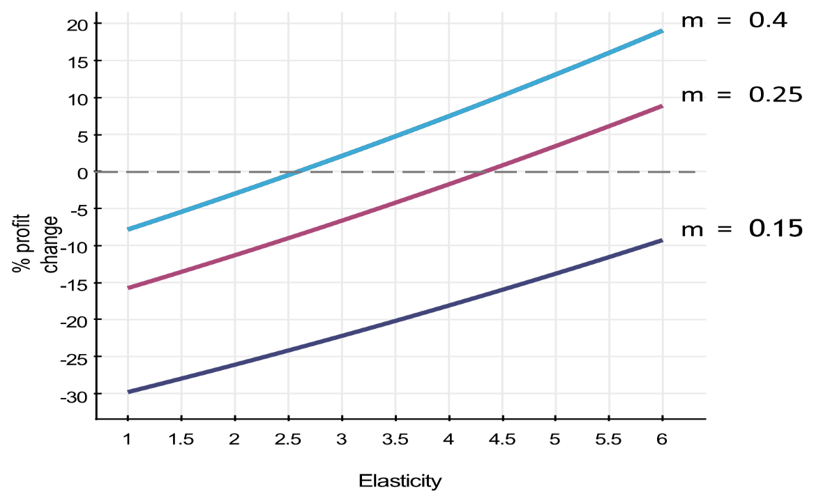

AIDAMS · Marketing Analytics
Session 3
Demand Foundations
What is perception — and why does it matter?
- Perception = the words / associations that come to mind for a brand
- Starbucks · Apple · TikTok · H&M …
- Why it matters
- Check alignment with our intended positioning (STP)
- Understand competitors
- See whether actions (e.g. a campaign) changed how people see us
- Spot openings for a new sub-brand — or a need to reposition
- Caveat: perception may not match reality — so we measure it
Process of a perceptual study
- Design the questionnaire
- Choose brands and descriptive attributes customers actually use
- Pick a scale (e.g. 1–7)
- Build the perceptual table
- Collect ratings · average across respondents → brand × attribute matrix
- Reduce dimensionality with PCA
- Many correlated attributes → a few meaningful factors
- Design the positioning map
- Plot brands (and attributes) on the top factors · interpret gaps & rivals
What is PCA?
- Broad constructs often live in several correlated variables
- watery, smooth, bitter, youthful, refreshing, easy to drink → Tasteful
- sophisticated, expensive, premium, to be seen, family, everyday, casual → Elegance
- PCA summarizes many correlated variables into fewer uncorrelated factors
- That is how we reduce the dimensionality of high-dimensional survey data

Remember: three modeling paradigms
From Session 1 — business questions fall into three groups
Descriptive
Describe and visualize data; find relations.
Mostly unsupervised ML
Predictive
Predict outcomes such as purchase / click.
Causal / Inferential
Did marketing decision X cause outcome Y?
Discussion: segmentation and positioning maps belong to which paradigm — and why?
Where we go next
- In the next three sessions we focus on causal analytics
- With an emphasis on price and promotion optimization
- Today we start with the building block: demand foundations
- How demand responds to price · elasticity · profitability
Today’s roadmap
I · Why demand?
Managerial problem → marketing mix models → demand as WTP
II · Models
Linear vs multiplicative · log-linear form
III · Elasticity
Own-price elasticity · interpretation · approximation
IV · Multi-product
Own vs cross elasticities · cannibalization
V · Profit & price
Margin arithmetic · optimal price
VI · Class consulting project
The managerial question
- What is the relationship between price and sales?
- What happens if we increase prices by 10 percent?
- What happens if a competitor raises price by 5%?
- Do we gain share? How much?
- What is the optimal price of our product?
- Increase the profit
Marketing mix models (MMM)
- Estimate how marketing tactics affect sales
- Modern toolkit for price, promo, channels, competitive threats
- Objectives
- Map the mix into a demand relationship
- Fine-tune the 4 Ps for profit / value
Today we focus on the building blocks — especially price. Empirics come next session.
What is a demand curve?

How much are you willing to pay for one ticket for the Soccer World Cup final 2018 (in U.S. dollars)?
Demand curve shows the willingness to pay of consumers for a product/service
- Ask people about their willingness to pay
- Sort WTP high and plot against rank
- At price \(P\), quantity = # people with WTP \(\ge P\)
Let us test it in class
Your willingness to pay
Maximum you would pay (€) for a
Champions League final ticket this season
Demand as willingness to pay
- A demand curve shows the distribution of consumers’ WTP
- Consistent with utility maximization · generally downward sloping
- Consumers usually buy less when price rises
- Different people value the same product differently — some more, some less
Linear demand
Formula:
\(a\) and \(b\) are the parameters that we estimate
Example: \(Q = 40 - 5P\)
- Same absolute \(\Delta P\) → same absolute \(\Delta Q\)
- Challenges
- Can predict negative \(Q\)
- Same absolute effect at high vs low prices — often unrealistic

Multiplicative (constant-elasticity) demand
Formula:
\(A\) and \(\eta\) are the parameters that we estimate
- \(Q\) stays positive for \(P > 0\)
- Absolute response is smaller at high prices
- \(\eta > 0\) controls price sensitivity

From linear solvers to multiplicative models
Assume we have a machine that solves linear models. How can we use it to solve multiplicative models?

Why take logs?
- Multiplicative demand becomes log-linear
with \(\alpha = \log A\), \(b = \eta\)
- Now we can estimate with linear regression

Definition
The (own) price elasticity of demand is the percentage change in quantity demanded relative to a given percentage change in price.
- Unit-free measure of price sensitivity
- Typically negative (why?)
- Example: \(E_p = -2.8\)
- +1% price → about −2.8% unit sales
- Works for any demand curve — not only multiplicative
What elasticity really measures
- How easy it is to substitute away from the product
- Drivers: availability of alternatives, quality / branding gaps, awareness, switching costs
As we move up toward Tropicana (closer substitutes) → demand becomes more elastic
Elastic vs inelastic
- After a price cut, does revenue rise or fall?
- Remember \(R = P \times Q\)
Inelastic demand
\(-1 \le E_p < 0\)
Elastic demand
\(E_p < -1\)
A cut lowers \(P\) but raises \(Q\) — elasticity tells you which effect wins for revenue.
Survey of price elasticities
- Hitsch, Hortaçsu, and Lin (2019): “Prices and Promotions in U.S. Retail Markets: Evidence from Big Data”
- 2,000 brands in more than 17,000 stores
- Can you think about something with positive price elasticity?

Special property of multiplicative demand
- In \(Q = A P^{-\eta}\), the parameter \(\eta\) is the absolute value of own-price elasticity
- Elasticity is constant along the curve

Estimating \(\eta\) (preview)
- Need data on units and prices (and usually controls)
- Coefficient on \(\log P\) → elasticity
- A great feature for multiplicative demand models!
- Full empirical toolkit: next session
Approximation for small changes
- Handy for quick what-ifs
- Better for small than large price changes
- For exact answers, use the demand equation itself
Exact vs approximate — example
- Suppose \(\eta = 3\) and a 10% price cut
- Elasticity approximation: \(\%\Delta Q \approx 30\%\)
- Exact multiplicative response:
\[ \frac{Q_1}{Q_0} = (0.9)^{-3} \approx 1.37 \quad (+37\%) \]
- Approximation understates the lift for large changes
Why multi-product?
- Allow for competing product prices
- Predict demand for multiple products / groups
- Capture cannibalization inside a brand’s own line
System of demand equations
- In logs → a linear system (one equation per product)
- \(\beta_{ik}\) are elasticities
Two-product case
Multiplicative form:
Take logs → log-linear form:
with \(\alpha_i = \log A_i\)
Own vs cross elasticities
Own-price \(\beta_{ii}\)
How \(Q_i\) responds to \(P_i\).
Cross-price \(\beta_{ik}\)
How \(Q_i\) responds to \(P_k\) (\(k \neq i\)).
- What is the sign of \(\beta_{ii}\)?
- What is the typical sign of \(\beta_{ik}\)?
- Are \(\beta_{12}\) and \(\beta_{21}\) similar?
Predicting demand response in multi-product case
- To predict the price effect on demand for product \(i\), first estimate the parameters of the log-linear demand model
\[ \log Q_i = \alpha_i + \beta_{i1}\log P_1 + \cdots + \beta_{iK}\log P_K + \varepsilon_i \]
- Now if prices change such that \(\gamma_j\) = price change of product \(j\)
- The ratio of unit sales of product \(i\) after versus before the price changes is
\[ \frac{Q_{i1}}{Q_{i0}} = (1+\gamma_1)^{\beta_{i1}} \cdots (1+\gamma_K)^{\beta_{iK}} \]
Profitability analysis: general case
- Product \(i\): cost \(C_i\), base price \(P_{i0}\), base quantity \(Q_{i0}\)
\[ \pi_{i0} = Q_{i0}\,(P_{i0} - C_i) \]
- After a price change to \(P_{i1}\) (quantity \(Q_{i1}\) from last slide):
\[ \pi_{i1} = Q_{i1}\,(P_{i1} - C_i) \]
- Profitable only if \(\pi_{i1} > \pi_{i0}\)
Retail margin
- If the product is sold through retail, retailers usually take a percentage commission
- Then profit is:
\[ \pi_{i0} = Q_{i0}\big(P_{i0}(1-r_i) - C_i\big) \]
- \(r_i\) = the retail margin of product \(i\)
- Then profit is:
- If no retail margin is mentioned, assume it is zero
Promotion myth
- A commonly held belief in retailing
- Promotions lead to large changes in sales
- This proves that price promotions are profitable
- Is this statement necessarily true?
- Price promotions indeed increase sales
- But sales is not equal to profit
Margin arithmetic
- Price change factor \(\gamma\) (e.g. −0.05 for a 5% cut)
- Profits rise iff
\[ \frac{Q_1}{Q_0} > \frac{m}{m+\gamma} \]
- Gross margin \(m = (P_0 - C)/P_0\)

Worked numbers
- \(m = 0.25\), 5% cut (\(\gamma = -0.05\))
- Need \(Q_1/Q_0 > 0.25 / 0.20 = 1.25\) → +25% volume
- If \(m = 0.40\), same cut → need only about +14% volume
- Conclusion: cuts are costly unless demand is elastic enough and margin is high enough
Simple margin arithmetic: Example
- % profit change for a 5% price cut (multiplicative demand model):

Simple margin arithmetic: Moral
- Price cuts or promotions can be very costly unless
- Demand is sufficiently elastic
- Margin is sufficiently high
- But could there be some long-run gains compensating for the short-run profit loss?
- Price cuts or promotions as loss-leaders to build store traffic?
- Price cuts or promotions to retain customers?
- Price cuts or promotions as a necessary evil to compete with other manufacturers or retailers?
Optimal single-product price
- For elastic demand in the multiplicative model
- Depends on cost, retail margin, and elasticity
- Multi-product: need joint / equilibrium reasoning (or simulation)
See the Pricing & Profitability handout for the full derivation (eq. 42).
Your role
- Consultant to a manufacturing firm selling one product through retail
- Major player — no significant competitors
- Data science team estimated a multiplicative demand model
- Supply chain: marginal cost \(C = \$0.5\), retail margin \(r = 15\%\)
Notebook:
Demand_and_profitability_blank.ipynb
Questions to answer
- What is the price elasticity of demand?
- At \(P = 1.5\), what are \(Q\) and \(\pi\)?
- For a 15% price cut: \(\%\Delta Q\) exact vs approximation (eq. 23). Similar?
- Same for a 2% cut. What do you infer?
- Does a 15% cut from \(P=1.5\) raise manufacturer profit?
- Find the profit-maximizing price and the profit at that price.
Assignment 2
- Similar to today’s in-class consulting project — but for a multi-product market
- Three products with given multiplicative demand models (own- and cross-price elasticities)
- You will do demand response and profitability analysis for specified price changes
- Details and submission instructions are on Moodle
Takeaways
- Demand models connect marketing actions to quantity
- Multiplicative / log-linear form is flexible and regression-friendly
- Own- and cross-price elasticities have clear managerial meaning
- Small-change approximations are useful — and limited
- Profitability needs margin arithmetic, not just sales lift
- Optimal pricing follows once you know \(\eta\), \(C\), and \(r\)